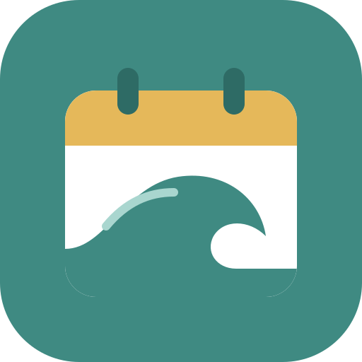

Tap your first day off, then your last.
Sessions are saved on this phone. Each one keeps what the app forecast for that spot and hour, so we can see where it's reading too big, too small, or rating spots wrong.
Regions are ranked on waves: the average of the best session score each day at that region's best spot. The weather score is shown separately and doesn't change the ranking. Tap a region to see its spots.
Change these if the ratings don't match what you know about the spot. Changes are saved on this device.
Let your mates know where you're surfing. Your crew list is saved only on this phone.
Each morning at about 6:40am you get one GitHub notification for anything new below. These settings also decide what shows under Good runs and Home spot.
Pick your days off. See which region has the best surf and weather, then check the swell, wind and tide chart for each spot.
Days Offshore helps you plan surf trips around your days off. Pick the days you're free and it ranks each region by how good the waves look, shows the best spot each day, and gives you a full swell, wind, tide and weather forecast for every spot.
Swell and wave heights are the average of four free global wave models (Météo-France, ECMWF, NOAA GFS and DWD), fetched through Open-Meteo. When the models disagree a lot, the Waves panel says so. Wind and weather also come from Open-Meteo. The app fetches a fresh forecast at most once an hour, or when you tap Refresh forecast. Forecasts more than about a week out are rough, so those days have dashed edges. Tide times and heights are LINZ's official predictions for the nearest standard port (Tauranga, Onehunga, Port Taranaki or Gisborne), so they match printed tide tables. Spots away from the port can be up to about half an hour different.
Each spot gets a score at 6am, 9am, 12pm, 3pm and 6pm. It's built from three parts:
That total is then multiplied by two checks: swell direction (how close the swell is to the angle the spot likes) and tide (only for spots that prefer a certain tide). A swell from the wrong direction can cut the score to about a third.
A region's wave score is the average, over your chosen days, of the best session at the best spot in that region each day. Regions are ranked on waves only.
Shown separately and doesn't change the ranking. Half comes from how much rain is forecast, a fifth from the chance of rain, and the rest from temperature (18–26°C is ideal). Showers, rain and thunder then pull the score down even when little rain is forecast.
Green is 80 and up, orange is 60 to 79, and red is under 60. Wind arrows use the same colours: green offshore, orange cross-shore or light, red onshore.
An estimate of the breaking wave height. It combines the swell and the local wind waves, allows for wave period (short period waves break smaller) and for how directly each one hits the beach, then adjusts for how exposed the spot is. It's calibrated against Surfline at Tay Street. If a spot reads too big or small, change Wave size adjust under Adjust this spot.
Longboard for 0–1 and 0–2 ft. Either board for 1–2 ft. Shortboard once it goes over 2 ft.
Offshore means the wind is within 40° of the spot's offshore direction. Onshore means it's blowing in from the sea side. Anything between is cross-shore, and 5 kts or less is light.
A good day is one with enough swell and enough hours of offshore wind in the hours you choose. A run is that many good days in a row in one region. Your home spot has its own rules. Change them all in Settings. Each morning at about 6:40am you get one GitHub notification for anything new.
After a surf, log it on the Home tab: stars, how big it really was, the wind and your board. The app saves what it forecast for that spot and hour next to your rating. After 3 sessions at a spot it tells you whether it reads too big or too small there and offers a one-tap size fix. Tap Copy for Claude to share your log when you want the scoring tuned.
Each spot's offshore direction, best swell, size range and best tide started from surf guides. Change them under Adjust this spot if they don't match what you know. Drive times from Mount Maunganui are set for each spot. From other places they're rough estimates from distance.
Forecast data by Open-Meteo. Map data © OpenStreetMap contributors. Swellmap, Surfline, Surf-forecast, Windy and MetService links open their own sites; Days Offshore isn't connected to them.